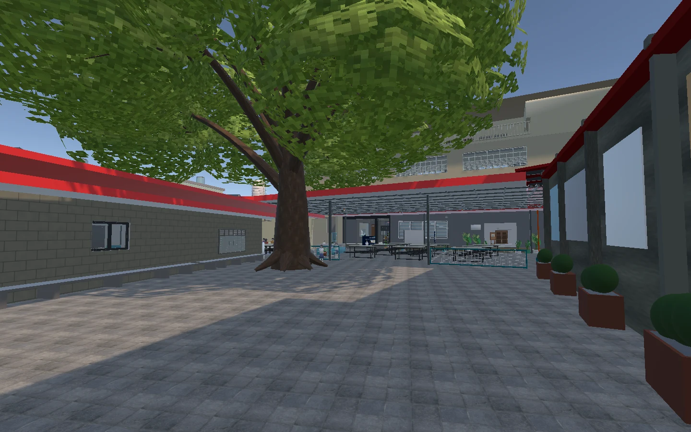
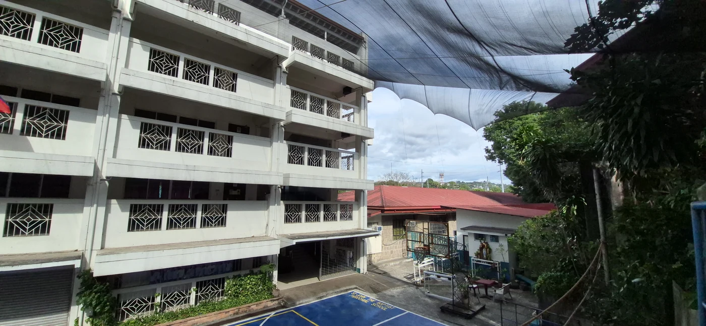
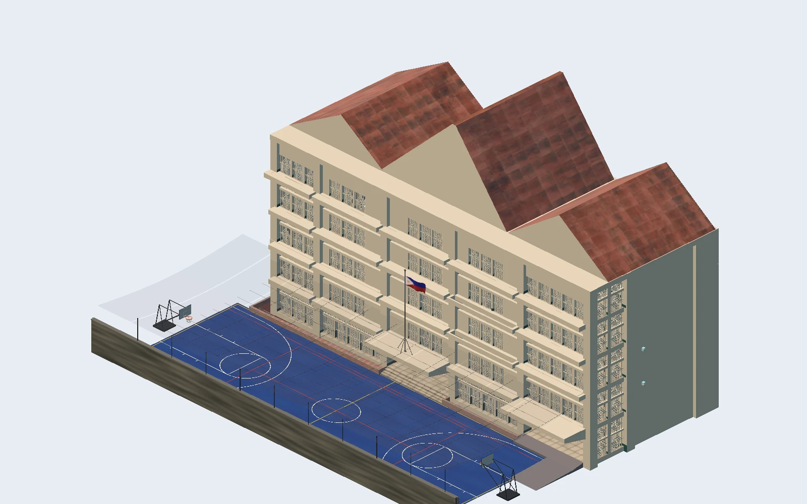
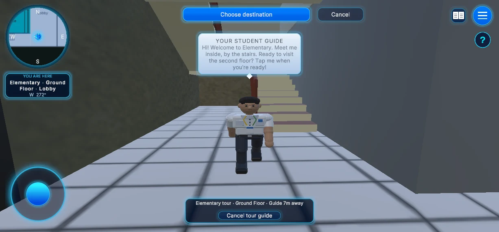
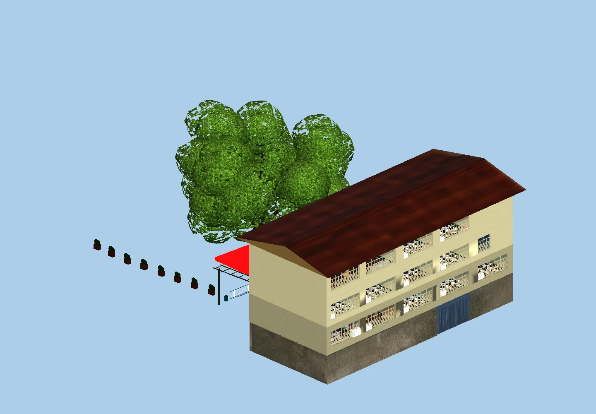
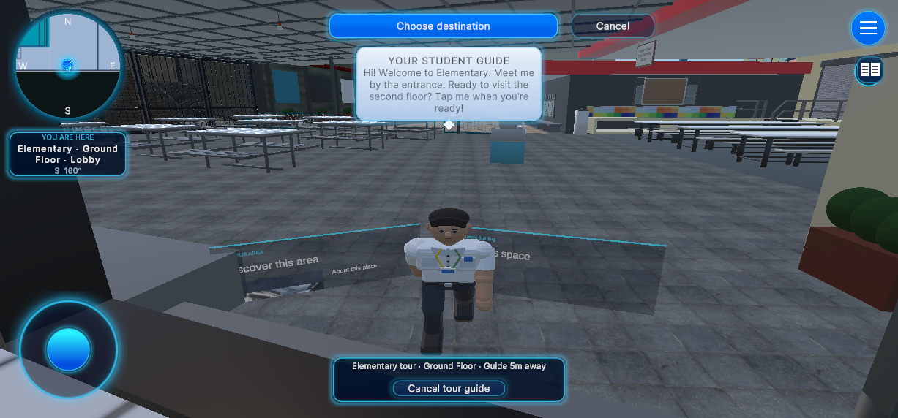
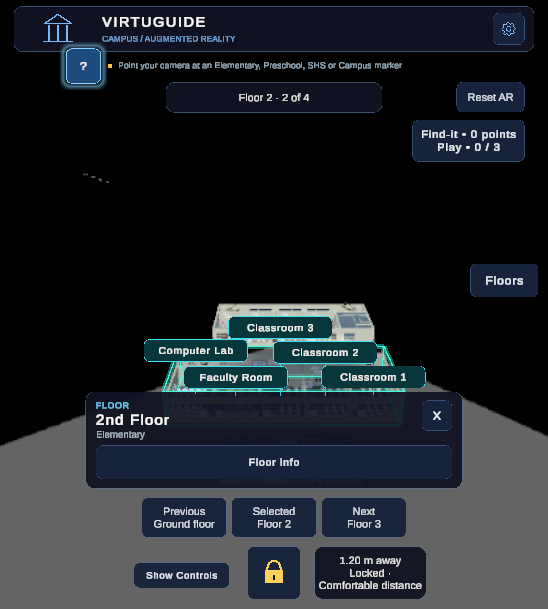
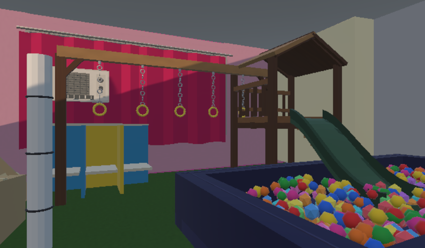
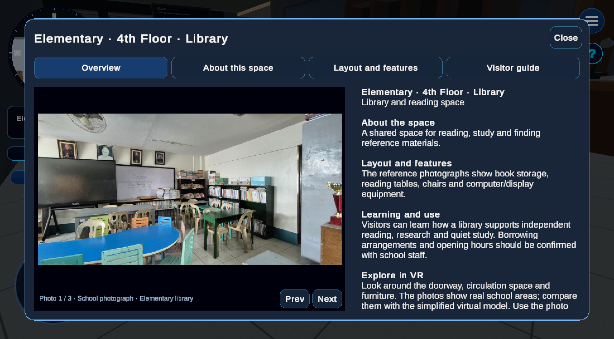

01 / VIRTUAL CAMPUS
Virtual campus tour
Walk through the 3D campus, follow a student guide and open room information. No headset needed.
ST. JOHN THE BAPTIST PAROCHIAL SCHOOL
Explore the SJBPS campus with virtual walks and augmented reality on Android.
TAYTAY, RIZAL, PHILIPPINES YOUR NEXT STOP



MEET YOURYOUR FIRST LOOK
STARTS HERE.
Checking GitHub download total…
Downloads, not unique visitors. Source ↗01 / CHOOSE YOUR PERSPECTIVE
Your first visit can start before you arrive. Get familiar with SJBPS’s Preschool, Elementary and Senior High School buildings through a student-guided walk or a closer look in AR.

01 / VIRTUAL CAMPUS
Walk through the 3D campus, follow a student guide and open room information. No headset needed.

02 / AUGMENTED REALITY
Scan a building marker to explore a miniature model, browse floors and discover rooms.
Get your AR markers ↗SEE IT IN VIRTUGUIDE / REAL APP CAPTURES
Four highlights. Tap a screenshot for a closer look.
Development screenshots; the published app may differ.

View screenshot ＋01 / STUDENT GUIDE
Follow a student guide and explore the campus at your own pace.

View screenshot ＋02 / AR FLOOR BROWSING
Select a floor to reveal room labels and inspect its layout.

View screenshot ＋03 / 360° ROOM VIEWER
Explore room interiors, including the Preschool playroom shown here.

View screenshot ＋04 / ROOM INFORMATION
Open room details, browse real photographs and learn how a space is used.
02 / YOUR TICKET TO AUGMENTED REALITY
Choose a building to preview or download its AR marker. Open the scanning guide below for help.
A first look at the early learning building.
Discover classrooms across the school floors.
Take a closer look at the upper school building.
A QUICK HOW-TO / ILLUSTRATED GUIDE
Use a printed original or display it on another device. Your camera phone needs the full marker in view.
01 · Print at 17 × 17 cm. 02 · Open AR Mode. 03 · Scan the full image in good light.
03 / FROM DOWNLOAD TO DISCOVERY
Download the APK below. Open the file and allow installation from your browser or file manager when Android asks.
Open Virtual Tour for a campus walk, or choose AR on a compatible device and allow camera access.
Follow the in-app instructions. For AR, scan one of the three original building markers.
YOUR NEXT STOP / VIRTUGUIDE
Explore St. John the Baptist Parochial School from your Android phone.
Download Android APK ↓v1.0.21 alpha · 11 November 2026 · 252.8 MB
Android 8+ · 32-bit + 64-bit ARM. Camera AR requires an ARCore-supported device.
Checking the newest published APK on GitHub…
Ready to download. Your browser manages the file transfer.
Release details and download verification ↗VirtuGuide SJBPS alpha 1.0.21 - Reduced repeated AR room privacy calculations and associated memory allocations. - Limited moving-image tracking to the single active building and preferred a lighter supported 30 Hz camera configuration in Cooler/Balanced modes. - Removed conflicting floor-control sizing and redundant HUD layout updates. - Avoided unused AR camera opaque/depth copies when no active occlusion provider needs them. - Includes SJBPS branding and the phone safe-area/layout improvements in the current app. Android 8+, 32-bit and 64-bit ARM. Camera AR requires an ARCore-supported device. Validated in the Unity Editor and packaged as an update to the existing app. Physical S24 FE/older-phone frame-rate and thermal testing is still pending; performance varies by device and building complexity.
SJBPS / SCHOOL YEAR 2026–2027
Explore the school, prepare for your visit, then register through the school’s form.
The form starts registration. Enrollment is confirmed through the school’s remaining steps.
Complete the school admission form and present the required documents. Use CAPITAL letters, as requested on the school Linktree.
Complete the assessment and school services for new or returning students.
The Registrar checks documents, encodes student data and confirms enrollment.
Have the fees assessed and pay through the Finance Office.
Follow the school’s instructions for the release of books and the school uniform.
PLAN YOUR VISIT / OPEN ONLY WHAT YOU NEED
New students and transferees: academic assessment, guidance interview, school clinic, uniform/books and ID photo. Returning students: school clinic, uniform/books and ID photo.
Ask the Registrar for the exact document checklist, assessment schedule and available places for your grade level.
Read original school PDF ↗The 2026–2027 school flyer lists:
• Preschool
• Grade School
• Junior High School
• Senior High School
Senior High School
The flyer features the Strengthened Senior High School Program and describes SJBPS as a pilot school in Taytay.
Junior High School
The flyer lists a ₱9,000 ESC grantee subsidy. Ask the Registrar about eligibility and availability.
Published school fees · S.Y. 2026–2027
Grade 7: ₱32,553.75
Grade 8: ₱33,339.35
Grade 9: ₱34,165.35
Grade 10: ₱35,031.65
Payment options
Cash, semestral, quarterly or monthly. The cash plan lists a 5% discount on tuition only. Monthly installments are scheduled on the 2nd day, July–February; use the PDF for grade-specific amounts and dates.
Senior High School
The standard fee table lists ₱17,500 for Grades 11 and 12. A separate promo panel lists 100% free tuition for students from public schools and ₱350/month for students from private schools with an SHS voucher. Confirm eligibility and which fee schedule applies with the school.
Other notes
Books and uniforms are paid separately. The ₱1,000 reservation fee is non-refundable and deducted from school fees upon enrollment. Personal checks are not accepted. Other discounts do not apply to the Grade 11–12 no-top-up promo.
Choose the uniform for the student’s school level and size. The supplied 2026–2027 price list covers Preschool–Elementary, Junior High, Senior High, PE and activity wear.
Selected listed prices
PE shirt: ₱360–₱500
Activity shirt: ₱310–₱430
School logo: ₱50
SHS patch: ₱45
Daily uniforms, trousers, shorts and socks have separate size-based prices. Check the original five-page list for the correct item and size. Books and uniforms are paid separately from school fees.
Read original school PDF ↗Vision
A globally academically competent community that embodies Christ’s teachings.
Mission
To witness Christ through quality Catholic education, proclaim Gospel values and develop 21st-century competencies in the Johannine community, in the spirit of St. John.
These are concise summaries; read the original school document for the full statements.
Read original school PDF ↗School email
sjbps_10@yahoo.com
Contacts printed on the supplied 2026–2027 PDFs
Telephone: (02) 8296 5896
Mobile: 0920 112 5764
Additional supplied contact card
Registrar’s Office: (02) 8829-2538
Business Office: (02) 7001-5357
The contact card and PDFs list different telephone numbers. Both sources are shown separately. Use the email or school links to confirm current contacts, admission requirements and enrollment schedules.
View original school image ↗The supplied Circular Letter No. 002 describes the school’s bag-inspection procedure.
When visiting
Follow school staff and security instructions at entry. The poster headings refer to authorized inspection, the security process, prohibited items and proper handling.
Read the full procedure
The supplied image is a small reference copy. Ask the school for a readable, current copy of the complete circular before relying on its fine print.
School-supplied images; small originals are shown as provided. Confirm current offers and visitor procedures with the school.
Questions about enrollment?
sjbps_10@yahoo.com · School Facebook ↗
School notices and documents supplied for 2026–2027.
Confirm current requirements, fees and available places with SJBPS.
YOUR NEXT STOP / SJBPS
St. John the Baptist Parochial School
Taytay, Rizal, Philippines
01 / COME FIND US
Open the school’s location and plan your route.
View on Google Maps02 / KEEP IN TOUCH
Visit the school’s Facebook page for more.
Visit school FacebookGoogle Maps and Facebook open in a new tab.
04 / HELP SHAPE THE NEXT STOP
Help us improve VirtuGuide with a short, six-question survey.
Share your feedback ↗Opens Google Forms in a new tab. No name or email requested.
A FEW THINGS BEFORE YOU GO
Not yet. VirtuGuide is currently available only as an Android APK, which cannot be installed on an iPhone or iPad. An iOS/iPadOS version would need to be built separately, signed for Apple devices and tested before release.
You can still browse this website and view the campus photos and AR markers on your iPhone or iPad. The AR and Virtual Tour experiences require the Android app.
No. The virtual campus uses a phone screen, touch joystick and camera controls.
No. AR needs a device supported by Google ARCore. Virtual Tour remains available independently of AR support.
Download and install the APK first. Campus content is bundled with the app. Initial AR service installation or updates may require internet.
Print it or display it on another screen. Keep the marker flat, fully visible and well lit while using the app camera.
This website introduces the VirtuGuide thesis project and provides app downloads and markers. Contact the school directly for current admissions information.